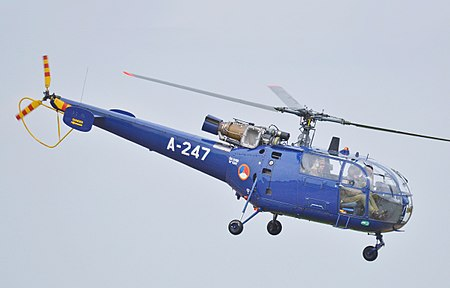
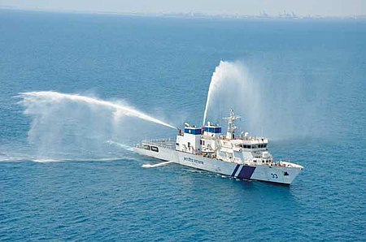
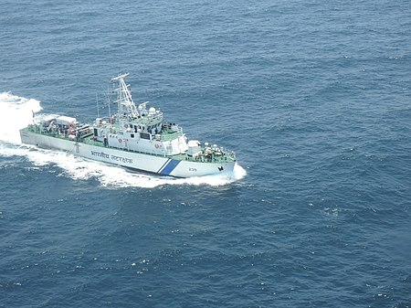
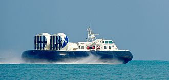
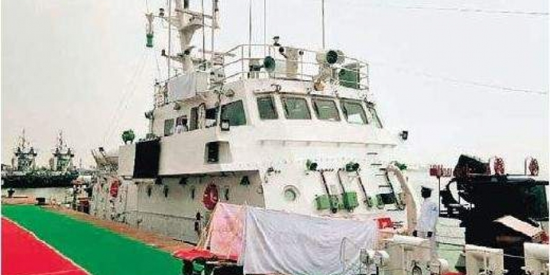
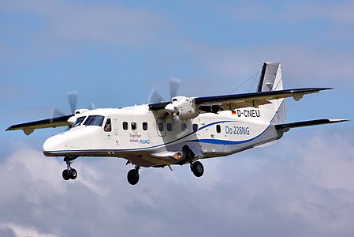

About
The Indian Coast Guard (ICG) is a maritime law enforcement and search and rescue agency of India with jurisdiction over its territorial waters including its contiguous zone and exclusive economic zone. The Indian Coast Guard was formally established on 1 February 1977 by the Coast Guard Act, 1978 of the Parliament of India.It operates under the Ministry of Defence.The Coast Guard works in close cooperation with the Indian Navy, the Department of Fisheries, the Department of Revenue (Customs) and the Central and State police forces.
INDIAN COAST GUARD STRENGTH
VESSELS
AIRCRAFTS
STATIONS
STRENGTHS
Click to see more about the weapons used by the Indian Coast Guards.

The Aérospatiale Alouette III (French pronunciation: [aloo-wɛt], Lark; company designations SA 316 and SA 319) is a single-engine, light utility helicopter developed by French company Sud Aviation.During its production life,it proved to be a relatively popular rotorcraft.READ MORE
Aérospatiale Alouette III Light Utility

The Vikram-class offshore patrol vessel is a series of seven offshore patrol vessels (OPV) being built at the Kattupalli shipyard by L&T Shipbuilding for the Indian Coast Guard. These are long range surface ships which are capable of coastal and offshore patrolling.READ MORE
Vikram Patrol Vessel

Aadesh-class patrol vessels are a series of twenty fast patrol vessels (FPVs) built for the Indian Coast Guard by Cochin Shipyard Limitedat its shipyard in Kochi, Kerala. The ships have been designed by M/s Smart Engineering & Design Solutions (SEDS) Kochi.READ MORE
Aadesh Patrol Vessel

Griffon/GRSE 8000 TD class is a series of hovercraft designed by M/s Griffon Hovercraft Ltd, Southampton, England and jointly built by Garden Reach Shipbuilders & Engineers, Kolkata and Griffon for the Indian Coast Guard and has helped Indian Coast Guard many times.READ MORE
Griffon Hovercraft

Priyadarshini-class patrol vessels (also referred to as Jija Bai Mod 1 class) are a series of 8 mid-shore fast patrol boats, built by Garden Reach Shipbuilders & Engineers, Kolkata and Goa Shipyard Limited, Vasco da Gama, Goa for Indian Coast Guard between 1991 and 1998.READ MORE
Priyadarshini Patrol Vessel

The Dornier 228 is a twin-turboprop STOL utility aircraft, designed and first manufactured by Dornier GmbH (later DASA Dornier, Fairchild-Dornier) from 1981 until 1998. Two hundred and forty-five were built in Oberpfaffenhofen, Germany.READ MORE
Dornier 228 Utility Aircraft
LOVING THE WEBSITE CONTACT US TO GET ONE!!!
CONTACT US